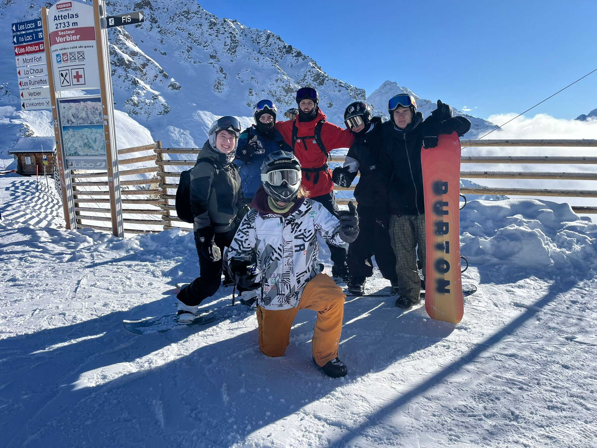
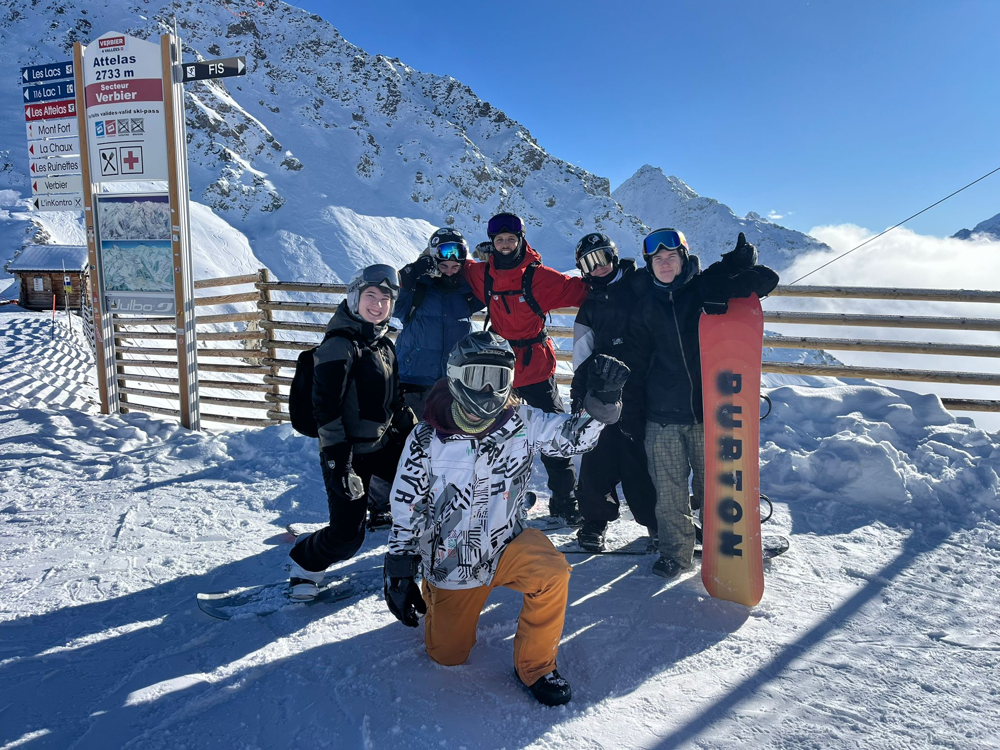

<!-- Insert this section into your existing Lessons page immediately above the “Your instructor” section. -->
<section class="section lesson-experiences" id="lesson-experiences">
  <div class="container">
    <div class="eyebrow">Two ways to enjoy the mountain</div>
    <h2>Choose your kind of day</h2>
    <div class="lesson-experiences-grid">
      <article class="lesson-experience-card">
        
        <div class="lesson-experience-copy">
          <div class="eyebrow">PRIVATE LESSON</div>
          <h3>Your day. Your pace. Your mountain.</h3>
          <p>Whether you want to spend the day shredding the slopes with a fellow boarder, build confidence, or focus on improving your technique, we'll shape the session around you. We'll work on what matters to you, take on new challenges when you're ready, and make time to enjoy the mountain along the way.</p>
          <p><strong>The goal? Have fun, ride better, and finish the day with a smile.</strong></p>
        </div>
      </article>
      <article class="lesson-experience-card">
        
        <div class="lesson-experience-copy">
          <div class="eyebrow">SHARED LESSON</div>
          <h3>Ride together. Learn together. Have fun.</h3>
          <p>We'll hit the slopes together, work through a few fun exercises to build key snowboarding skills, and put those skills into practice as we explore the mountain. We'll finish with a relaxed ride back down the slopes, enjoying the runs and the progress we've made.</p>
          <p><strong>A great way to improve your riding, share the experience, and enjoy a day on the mountain.</strong></p>
        </div>
      </article>
    </div>
  </div>
</section>
